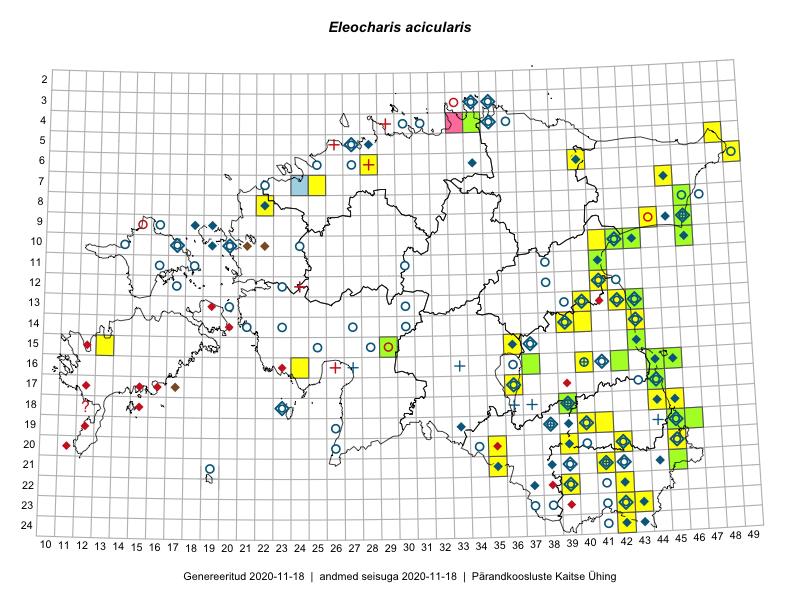

Eleocharis acicularis
Uuendatud: 2016-12-01
Kaardile koondatud taksonid: Eleocharis acicularis (L.) Roem. & Schult.

Kaart põhineb 22 kirjel, neist vaatlusi 19 ja eksemplare 3.
Kuvatud viited 20 esimesele andmebaasikirjele, ülejäänud PlutoFis
- Toomas Kukk, Kersti Tambets, Sten Mander, Janika Sammasto, Timo Luhamäe: 2014-07-29: 18-45: ala
- Toomas Kukk, Eerik Leibak: 2015-07-29: 16-44: GPS punkt
- Toomas Kukk, Timo Luhamäe, Kersti Tambets, Sten Mander, Janika Sammasto: 2014-07-29: 19-45: ala
- Toomas Kukk, Kersti Tambets, Timo Luhamäe: 2014-07-30: 19-45: GPS punkt
- Mari Reitalu, Oliver Parrest: 2015-08-04: 16-10: ala
- Mari Reitalu, Oliver Parrest: 2015-07-24: 14-13: ala
- Triin Reitalu, Mari Reitalu: 2015-08-09: 16-11: ala
- Kadi Palmik, Helle Mäemets: 2015-07-22: 16-40: ala
- Meeli Mesipuu, Thea Kull: 2015-08-19: 19-46: ala
- Helle Mäemets, Mare Leis: 2015-07-06: 15-36: ala
- Helle Mäemets, Mare Leis: 2015-06-25: 17-36: ala
- Kadi Palmik, Helle Mäemets: 2015-08-13: 19-41: ala
- Meeli Mesipuu, Thea Kull: 2015-08-19: 19-46: GPS punkt
- Mari Reitalu, Triin Reitalu: 2015-08-09: 16-11: ala
- Toomas Kukk, Tiit Hallikma: 2016-06-17: 19-45: ala
- Helle Mäemets: 2015-07-19: 15-36: GPS punkt
- Ott Luuk, Eerik Leibak: 2016-08-04: 10-41: ala
- Ott Luuk, Eerik Leibak: 2016-08-04: 10-42: ala
- Ott Luuk, Eerik Leibak: 2016-08-04: 10-41: GPS punkt
- Peedu Saar: 2015-08-21: 16-42: GPS punkt